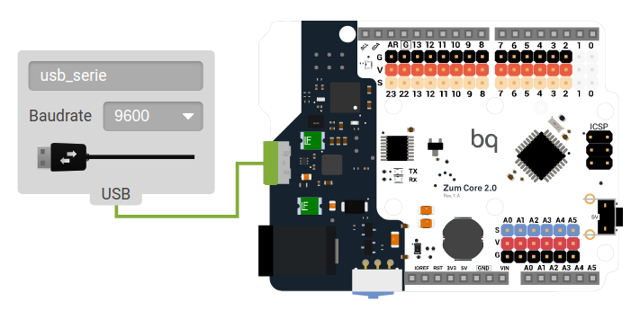
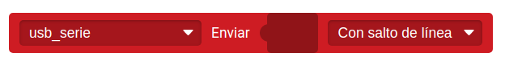
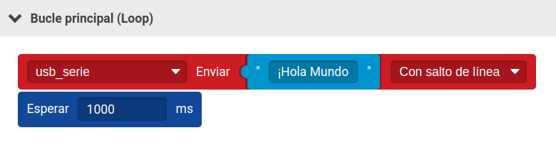
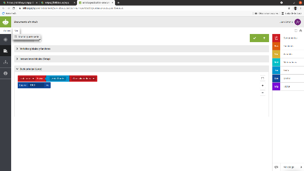
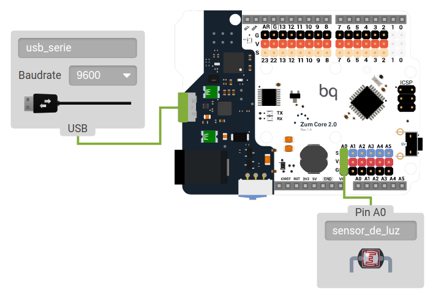
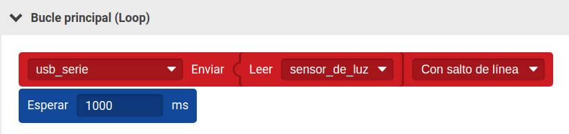
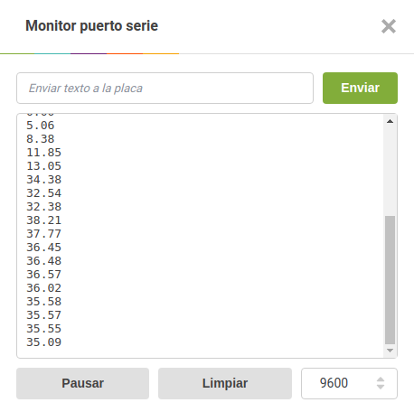

El monitor puerto serie es el medio que tiene la placa controladora para comunicarse con otro aparato como el ordenador. Es muy útil para comprobar el
valor que le está llegando a la placa de un sensor, de una variable, etc. Esto nos ayudará a delimitar mejor nuestros valores en las condiciones o bucles que
programamos y corregir y entender los posibles errores de un programa.
Para usar el monitor puerto serie con el ordenador debemos mantener conectada la placa controladora mediante el cable USB. En la pestaña Hardware seleccionamos el componente USB serie y lo arrastramos a la parte gris que rodea la placa, se conectará automáticamente al puerto USB de esta. El baudrate es la cantidad de información que se transmite en un segundo y se mide en baudios (bits/segundo).
Utilizaremos el baudrate que aparece por defecto: 9600 baudios.
Figura 37. Componente USB serie conectado a la placa controladora Zum Core.
Nuestro primer ejemplo va a consistir en mostrar un mensaje por pantalla. Para ello, en la pestaña Bloques, en la categoría Componentes, encontramos los bloques de comunicación: Recibir, Recibir número y Enviar. Elegimos el bloque Enviar y lo situamos en el apartado Bucle principal (Loop). Seleccionamos la opción USB_serie
en el desplegable y dejamos la opción Con salto de línea para mostrar los mensajes en líneas diferentes. En caso de que queramos que nos los muestre en la misma
línea, elegiremos Sin salto de línea en el desplegable.
Figura 38. Bloque enviar por monitor puerto serie.
A continuación, añadimos el bloque “Texto” de la categoría Texto y escribimos en el mensaje que queremos mostrar, en este caso ¡Hola mundo!
Situaremos después un bloque Esperar para visualizar el mensaje cada segundo.

Figura 39. Ejemplo de envío de mensaje por monitor puerto serie.
Cargamos el programa en la placa y, a continuación, hacemos clic en Ver y seleccionamos Monitor Puerto Serie.
Figura 40. Mostrar el Monitor Puerto Serie.
Se abrirá una ventana nueva donde aparecerá el mensaje que hemos escrito, con una cadencia de 1 segundo. Puedes cambiar a la opción de Sin salto de línea para
visualizar un mensaje seguido del otro, pero es importante que, si vas a realizar un cambio en la programación, primeramente, cierres el Monitor Puerto Serie, a
continuación cargues el programa y, una vez cargado a la placa, vuelvas a abrir el Monitor Puerto Serie.
Al igual que hemos hecho con el mensaje de texto, podemos mandar la lectura de cualquier sensor a través del Monitor puerto serie.
Leer el valor de un sensor con Placa Zum Core
Vamos a leer los valores que el sensor de luz está enviando a la placa. Colocamos en la pestaña Hardware los elementos necesarios:
● Placa controladora
● USB_serie
● Sensor de luz
Figura 41. Componentes USB serie y sensor de luz conectados a la placa controladora Zum Core.
En la pestaña Bloques, en la categoría Componentes, Básicos, elegimos el bloque Enviar y lo situamos en el apartado Bucle principal (Loop). Seleccionamos la opción
USB_serie en el desplegable y dejamos la opción Con salto de línea para mostrar los mensajes en líneas diferentes.
A continuación, añadimos el bloque Leer sensor_de_luz de la categoría Componentes.
Situaremos después un bloque Esperar para visualizar el mensaje cada segundo.
Figura 42. Ejemplo de leer el valor de un sensor.
Para poder ver los valores, como hemos comentado antes, cargamos el programa en la placa y, a continuación, hacemos clic en Ver y Mostrar Monitor Puerto Serie.
Figura 43. Valores del Sensor de luz en el Monitor Serie.